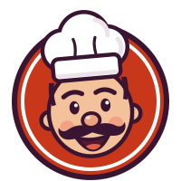

Laden-Vorlage
Eine Technik, mehrere Läden: jede Seite unten kommt aus derselben Vorlage – nur die Einstellungen in laeden/<laden>/ sind verschieden.
Zu jeder Seite gehören die Chef-App (…/chef/), die Küchenansicht (…/kueche/) und der Bildschirm im Laden (…/tv/).
 Saray DönerFreital · Altenberg – Döner & Pizza seit 1997
Saray DönerFreital · Altenberg – Döner & Pizza seit 1997

Saray DönerAltenberg – Döner & Pizza seit 1997 Saray DönerFreital – Döner & Pizza seit 1997
Saray DönerFreital – Döner & Pizza seit 1997